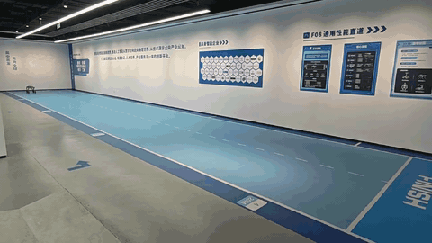

运行数据统计
12
在线机器人
3
离线机器人
85%
整体运行率
5
待处理事件
机器人清单
智身 - 巡检机器人01
楼梯区测试中
电量：88%
多功能区
智身 - 安防机器狗02
水域巡检中
电量：52%
涉水区
浪潮 - 清洁机器人03
离线
电量：10%
西施塘
智身 - 巡逻机器狗04
越野测试中
电量：25%
越野区
智身 - 智能巡检机器人01
检测中
电量：76%
测试认证中心
宇树 - 智能巡检机器人01
巡检中
电量：65%
叆叇岭景区
充电基地信息
旺山主充电基地
正常运行
8/10
可用充电枪
2
正在充电
位置：旺山游客中心旁
全球具身智能全场景实训检测认证基地(苏州吴中·旺山基地) 机器人分布 2026-03-11 15:30:00
智身 - 巡检机器人01
位置：多功能区 | 电量：88% | 状态：楼梯区测试中
智身 - 安防机器狗02
位置：涉水区 | 电量：52% | 状态：水域巡检中
浪潮 - 清洁机器人03
位置：西施塘 | 电量：10% | 状态：离线（低电量）
智身 - 巡逻机器狗04
位置：越野区 | 电量：25% | 状态：越野测试中
智身 - 智能巡检机器人01
位置：测试认证中心 | 电量：76% | 状态：检测中！

宇树 - 智能巡检机器人01
位置：叆叇岭 | 状态：智能巡检中，暂无异常！
事件上报 6
模拟检测告警
紧急
X公司智能巡检机器人01（叆叇岭景区）天气晴朗 无异常
低电量告警
10分钟前
B公司清洁机器人03（西施塘）电量仅剩10%，请及时充电
设备故障告警
25分钟前
B公司巡逻机器狗04（宝华寺）传感器异常，无法正常巡检
设备离线告警
1小时前
C公司配送机器人06（竹海）网络断开，离线超过30分钟
区域越界告警
2小时前
A公司安防机器狗02（九龙潭）超出预设巡逻范围
任务完成提醒
3小时前
A公司巡检机器人01（旺山广场）完成今日第3次巡检任务